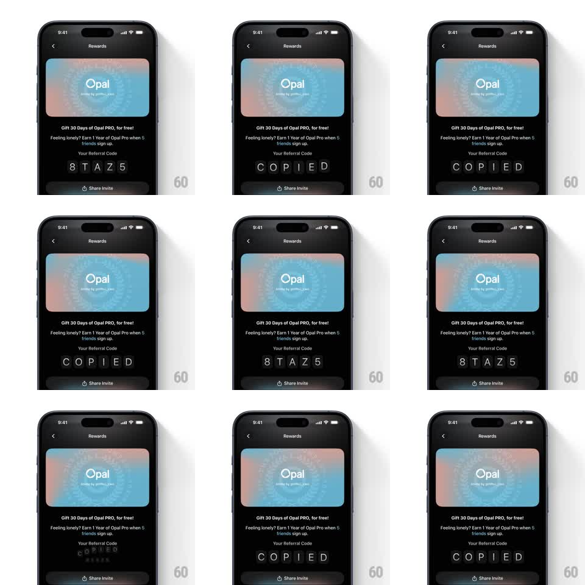

Media
Frame-by-frame

Rebuild this interaction 1:1: Opal's referral code copy - tapping the code ("8TAZ5", shown as individual character tiles) makes each character pop, tilt, and spring into a "COPIED" confirmation, tile by tile in a fast stagger.

Rebuild this interaction 1:1: Opal's referral code copy - tapping the code ("8TAZ5", shown as individual character tiles) makes each character pop, tilt, and spring into a "COPIED" confirmation, tile by tile in a fast stagger.
## Integration
Integration: stack-agnostic spec - springs given as stiffness/damping, timed motions as duration + curve; map every value to your framework and animation library of choice.
## Scene
Dark rewards screen: Opal card top, referral copy, then "Your Referral Code" - five bordered character tiles (mono glyphs, rounded squares), "Share Invite" button below.
## Motion spec
Pattern: tap-triggered character cascade, ~700ms total.
- On tap: the tiles' characters swap from the code to "COPIED", one tile at a time left to right (60ms stagger).
- Each tile: current glyph scales down + tilts (scale 1 -> 0.7, rotate -15deg, 120ms), new glyph springs in from below (translateY 12 -> 0, scale 0.8 -> 1 with overshoot, spring ~380/18, rotate 8deg -> 0).
- A soft haptic-style screen tick: the whole tile row does a 1px dip at the start.
- After ~2s, tiles cascade back to the code with the same animation (reversed content).
- Tiles get a brief accent border flash as each new glyph lands (200ms fade).
## Calibration
- Per-tile overshoot + tilt is the playfulness - uniform scale without rotation reads flat.
- 60ms stagger: fast enough to read as one gesture, slow enough to see the wave.
## Reduced motion
All tiles crossfade text together (200ms), no tilt.
## Don't miss
- Tiles are individual bordered squares - the animation respects tile boundaries, not a single text morph.
- The return-to-code cascade is identical in structure; do not leave it on "COPIED" forever.